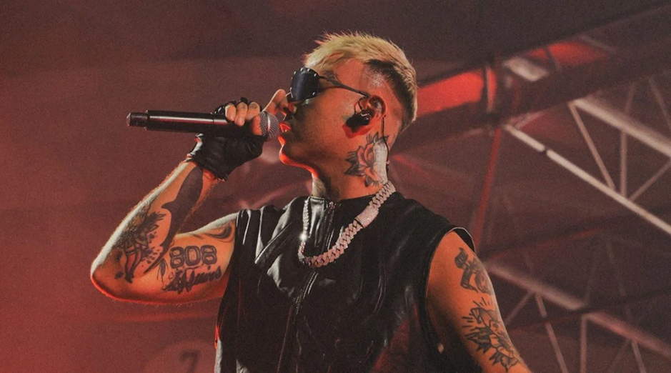

.png)
Lazza : “In gara con me stesso. Emis Killa è mio papà, mi ha aiutato”

C’è da dire che la parte jam è più forte di quella orchestrale, un po’ vittima della poca voglia di rischiare.
“Ad essere sinceri, l’idea di stravolgere con l’orchestra le versioni originali del disco m’era pure venuta. Ma ho avuto il sentore che alcuni pezzi in una chiave molto diversa venissero alla fine un po’ pasticciati. Forse ho fatto una cosa un po’ stupida a non provarci. Mentre registravo la parte ‘jam’ mi sono detto: ca**o, il disco avrei potuto farlo tutto così. Pure nella parte con la band, nonostante la veste diversa dall’originale, si avverte che la matrice è una. Diciamo che la parte orchestrale l’ho fatta più per gli altri e quella jam per me".
Tornando agli ospiti, la formula del tu vieni da me che poi io vendo non sta rendendo il rap italiano un circolo chiuso, un club frequentato sempre dagli stessi?
"Effettivamente la formula è po’ satura. È vero che siamo quattro gatti e sono io il primo a dire che nei dischi ci sono quasi sempre gli stessi featuring che ai concerti quasi sempre gli stessi guest. Sono al lavoro su nuovi progetti con un sacco di giovani".
Chi ha dato un’opportunità a lei quando era alle prime armi?
"Emis Killa l’ha fatto un sacco di volte. E gliene sarò sempre stato grato. A Roma, durante la festa di una radio, ho chiesto al pubblico di fare un applauso ‘a mio papà Emis’. Perché per me lui è quella cosa lì. Un altro è Salmo, mi ha ‘svezzato’ nel rapporto col palco e col live. Tanti consigli giusti me li ha dati Fabri Fibra a cui voglio molto bene. E poi c’è Marracash lo psicologo, ogni chiacchiera con lui è una seduta d’analisi".
Uno americano enorme che le sarebbe piaciuto avere stasera?
"Probabilmente Lil Baby. Attualmente è in tour in America quindi non posso accoglierlo, magari fra qualche tempo lo vado a trovare io”.
L’evento di San Siro è abbastanza diverso dallo spettacolo che porta in tour dal 12 luglio.
"Decisamente. San Siro è il palco principe del mio Locura Summer Tour perché di posti così in Italia ce n’è uno. Capienza enorme, palco gigante, e poi sono a casa, quindi, posso fare un po’ quello che mi pare. Anche in tour, dove porterò solo la band, ci divertiremo molto. Per una questione di tempi (a San Siro lo show comincia alle 20.30 perché la durata dello spettacolo è stimata attorno alle 2 ore e mezza, ndr) in giro non potrò certo fare tutti e 48 i brani che ho in scaletta a Milano. Un vero e proprio greatest hits della mia vita".
Vai alla biografia dell’artista
LAZZA